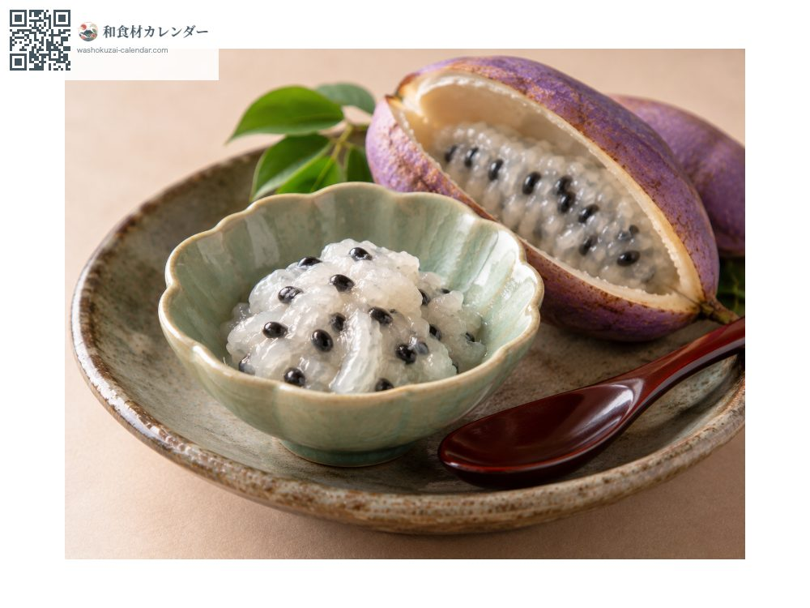
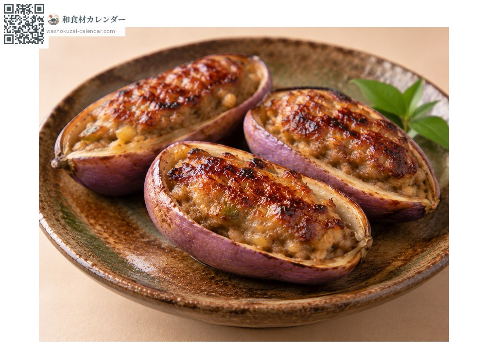
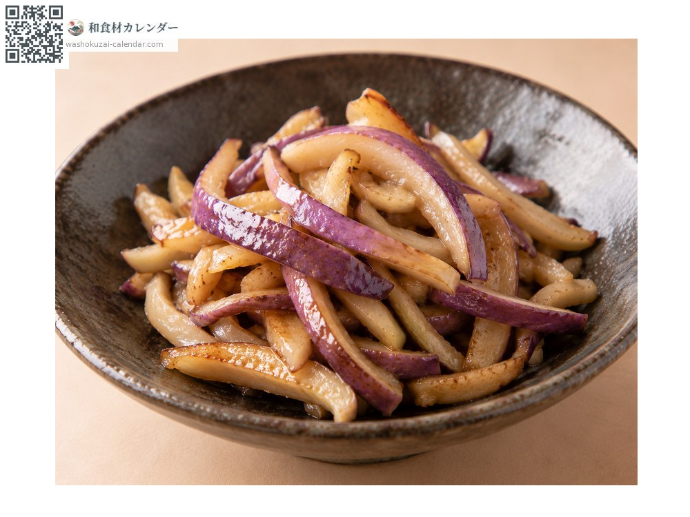
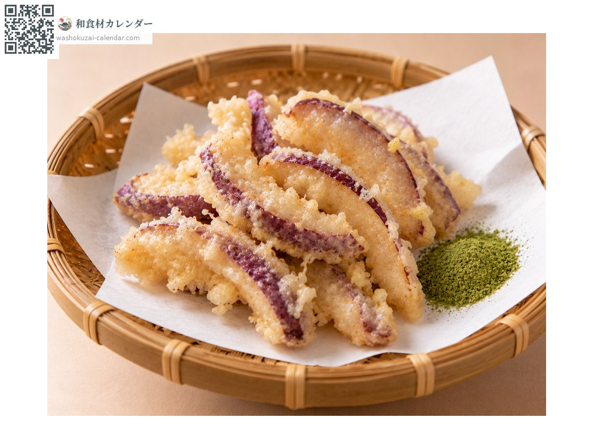

果物
アケビ
あけび
別名・別表記木通、通草、akebi
旬は9月・10月

旬の時期
1月
2月
3月
4月
5月
6月
7月
8月
9月
10月
11月
12月
旬出回り
調理法

そのまま
果肉をすくって食べる。甘く、種が多い。

皮の肉詰め
皮に挽き肉と味噌を詰めて焼く。山形の郷土料理。

皮の炒め物
皮を刻んで炒める。ほろ苦さが持ち味。

天ぷら
皮を衣で揚げる。苦みがやわらぐ。
選び方
皮が紫色に色づき、裂け始めたもの。果肉が白く艶のあるもの。
保存方法
常温で数日。裂けたものは早めに。皮は冷蔵。
主な産地
豆知識
山形県が全国生産の大半を占める。果肉は甘く種が多い。皮はほろ苦く、山形では肉詰めや炒め物にして野菜のように食べる。熟すと自然に裂けることから「開け実」が名の由来とされる。